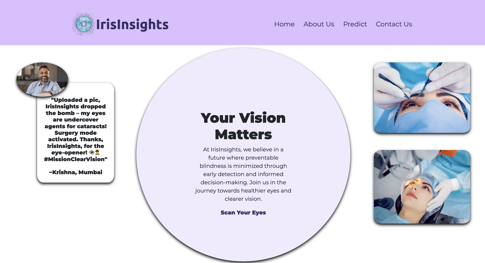
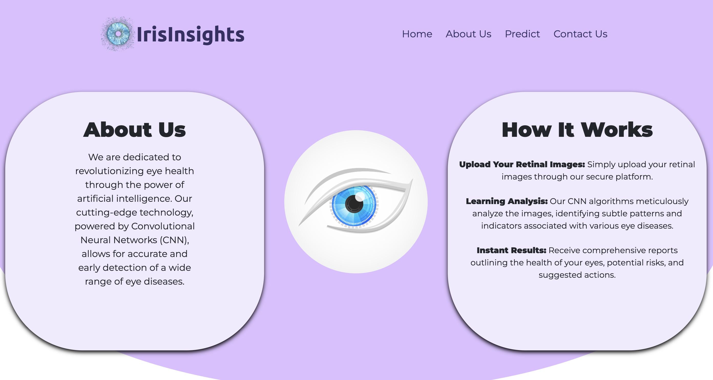
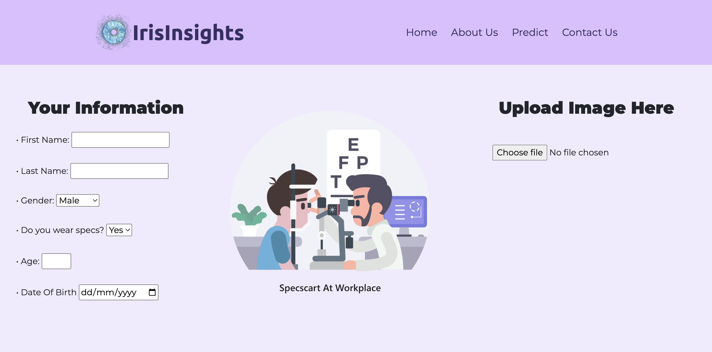
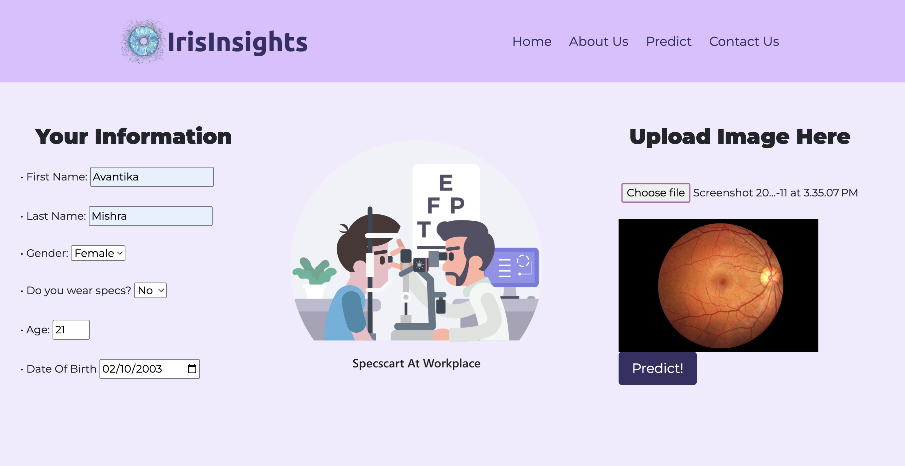
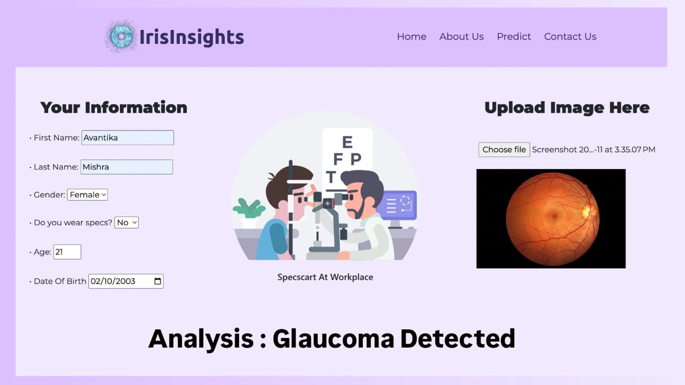

Eye Disease Prediction using CNN
Helping detect eye diseases early through deep learning.
🧩 Problem Statement
Millions suffer from vision loss due to late detection of common eye diseases like Cataract and Glaucoma. Manual diagnosis using retinal images is time-consuming and requires expert intervention, which isn't always accessible. This project uses a CNN model to automate early disease detection from eye images, aiming to improve diagnostic speed, accuracy, and accessibility—especially in remote areas.
Cataract
Glaucoma

Diabetic Retinopathy
Normal Eye
🧠 Model Used
1. Data Preprocessing: Resized images to 224x224, normalized pixel values to 0–1, applied augmentation (flip, rotate, zoom), and encoded labels.
2. CNN Model: Built with 3 convolutional layers, ReLU activations, max pooling, and dropout. Dense and softmax layers used for classification.
3. Training: Used Adam optimizer, cross-entropy loss, batch size of 32, trained for ~30 epochs. Accuracy monitored via validation set.
4. Evaluation: Accuracy and confusion matrix used. Best performance seen in Cataract class.
5. Deployment: Model deployed using Flask. User uploads an image → prediction returned.
📂 Dataset
Eye Disease Dataset from Kaggle. Includes 5,000+ fundus images across 4 classes: Cataract, Glaucoma, Diabetic Retinopathy and Normal.
🛠 Tech Stack
- Python, TensorFlow/Keras
- Google Colab
- Flask (for deployment)
- OpenCV, Pandas
📈 Results
Achieved 91% test accuracy. Confusion matrix showed strong recall for Cataract cases. Model generalizes well on unseen data.
🖼️ Implementation Screenshots
1. Home Page
2. About Us
3. Information Page
4. User Entering Information
5. Final Analysis
🎯 Deployment
Model deployed using Flask with a simple UI to upload and predict eye disease class. Hosted locally for now.
💡 Learnings
Gained experience with CNN architecture, image preprocessing, handling class imbalance, and deploying models with Flask.
🚀 What's Next?
Extend model to support more diseases. Optimize for mobile deployment using TensorFlow Lite.